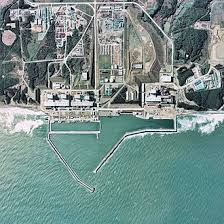

2026-04-20 16:53
中新网4月20日电 据日本广播协会(NHK)报道，当地时间20日16时53分许，日本三陆近海发生7.4级地震，震中附近有多个核电站及核燃料处理工厂，目前多地正在确认受影响程度。
据报道，日本东北电力公司称，位于宫城县石卷市和女川町的女川核电站正在确认此次地震是否对其造成异常。女川核电站共有3台机组，其中2号机正在重新运行，1号机已报废，3号机长期停止运行。

据东京电力公司的消息，位于福岛县大熊町和双叶町的福岛第一核电站也正在确认此次地震是否对其造成新的异常影响。位于富冈町和楢叶町的福岛第二核电站也在同步确认相关情况。
此外，位于青森县东通村的东通核电站虽然长期停止运行，但目前尚不清楚受影响情况。
除核电站外，青森县陆奥市和六所村还有两处核废料储存设施，当地也正在确认受影响情况。